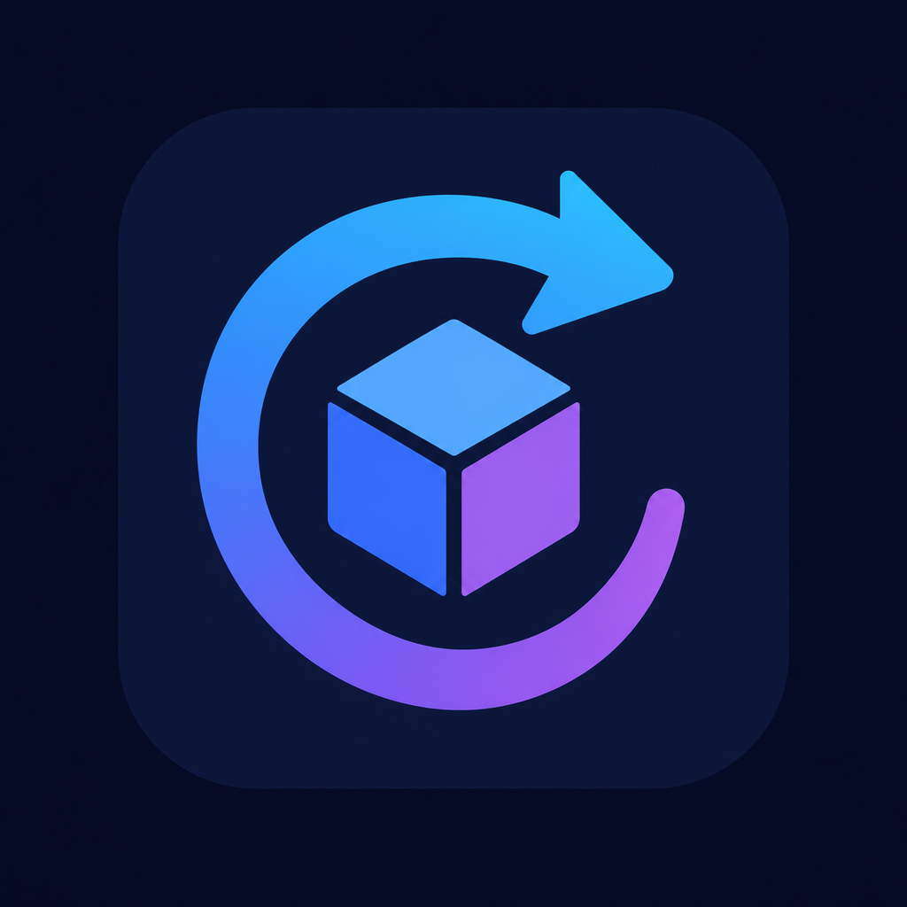
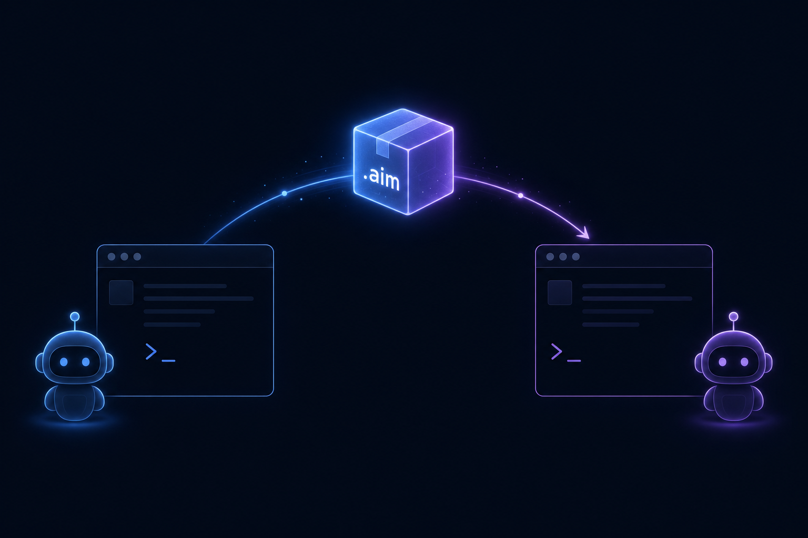

Your AI agent isn't married to one CLI.
AIM moves its persona, memories, skills, settings and secrets — between 10 harnesses, across Linux, macOS and Windows. One command. Everything local.

$ pipx install aim-migrate
$ aim export --harness claude-code -o move.aim
exported ~/.claude → move.aim (persona=1, memories=2, skills=6, secrets=3 vaulted)
$ aim import move.aim --harness codex
imported move.aim → ~/.codex (files intact, skills placed, secrets restored)
Works between
Claude Code
Codex CLI
OpenCode
Goose
Hermes
OpenClaw
Buzz
Grok Build
DeepSeek Harness
Roo Code
Any pair, any direction, any OS. 31 tests, 3-OS CI, live spot-checks against real binaries.
Your secrets stay yours
- No telemetry, no account, no network calls — 100% local tool
- API keys are auto-detected and moved into an encrypted vault
- The vault is standard age — decrypt it with the stock age CLI any time
Why people switch (and why it hurt before)
- 39% of agent users run Claude Code, 16% Codex — and they move between them
- Until now that meant rebuilding your persona, memory, skills and logins by hand
- AIM is the missing "Smart Switch": export here, import there, done